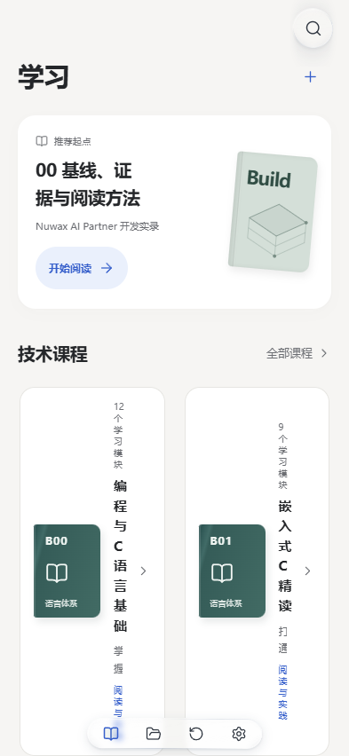

内容迁移核查 / 2026.10.13
手机端书库与知栈
27 册逐册内容比对
直接读取您指定的“手机端书库”目录，以实际生成的每册 HTML 和实验包为基准。对照本地 1.15.1 未发现成片正文缺失；已确认首页排版、整册小节入口和 B01 本册资料包存在问题，本次已修复。
27 / 27分册逐一对照
407 / 407章节正文对应
1574补入整册目录的章节小节入口
408原书实验包文件逐字节匹配
本次确认的三个内容呈现问题
① 手机首页沿用双列书架，横排课程卡片被压窄；已按可用宽度排列。② 整册目录原来只列章，小节藏在阅读器内；已提供与原书对应的小节直达链接。③ B01 本册包缺少原书配套固件入口和说明；已补齐。
没有证据支持的结论不会写成“已修复”：在本机发布的 1.15.1 文件中，407 篇章节的正文核对已通过。这不证明您手机中的实际安装版本、更新状态和每页显示都正常；尚未做真机逐页检查。
逐册核对结果
正文篇数包含原书的路线、术语表和附录，与“学习模块数”含义不同。代码、图、表列为手机书库中的数量；导读内容也参与比对。当前知栈保留额外的源书参考资料，不用删减正文来追求数量相等。
逐章目录与文件明细
展开任意一册查看每一章的对应位置。1574 个入口统计章节小节；各册的导读标题另通过“导读与实验资料”访问，导读全文也参与核对。阅读链接使用当前电脑的本地服务。
B00 · 编程与 C 语言基础14 篇正文 · 59 个小节入口
打开手机端书库 · 打开知栈本册
指定手机书库中的本册章节、代码、图解和表格均已对应；本册实验包文件逐字节匹配。
实验包文件清单（4 个）
B00/labs/sampler.c · 1267 字节 · 已匹配本册包B00/labs/sampler.h · 491 字节 · 已匹配本册包B00/labs/sampler_cli.c · 666 字节 · 已匹配本册包B00/labs/sampler_test.c · 1042 字节 · 已匹配本册包
B01 · 嵌入式 C 精读11 篇正文 · 86 个小节入口
打开手机端书库 · 打开知栈本册
发现并修复：原本册包有 13 个 C 实验源文件，但手机书库中的 5 个固件／接收文件仅在综合项目包内，且缺少对应 README。现已将这 6 个文件加入本册包，原有实验保留。
实验包文件清单（6 个）
B01/labs/linker.ld · 494 字节 · 已匹配本册包B01/labs/main.c · 3265 字节 · 已匹配本册包B01/labs/Makefile · 382 字节 · 已匹配本册包B01/labs/startup.c · 717 字节 · 已匹配本册包B01/labs/p01_acquisition.py · 1829 字节 · 已匹配本册包B01/README.txt · 198 字节 · 已匹配本册包
B02 · C++（嵌入式向）14 篇正文 · 57 个小节入口
打开手机端书库 · 打开知栈本册
指定手机书库中的本册章节、代码、图解和表格均已对应；本册实验包文件逐字节匹配。
实验包文件清单（1 个）
B02/labs/driver_contract.cpp · 1080 字节 · 已匹配本册包
B02a · C++ 语言基础14 篇正文 · 63 个小节入口
打开手机端书库 · 打开知栈本册
指定手机书库中的本册章节、代码、图解和表格均已对应；本册实验包文件逐字节匹配。
实验包文件清单（1 个）
B02a/labs/values.cpp · 1692 字节 · 已匹配本册包
B03 · Rust（嵌入式向）13 篇正文 · 52 个小节入口
打开手机端书库 · 打开知栈本册
指定手机书库中的本册章节、代码、图解和表格均已对应；本册实验包文件逐字节匹配。
实验包文件清单（1 个）
B03/labs/dma_contract.rs · 1029 字节 · 已匹配本册包
B03a · Rust 语言基础14 篇正文 · 58 个小节入口
打开手机端书库 · 打开知栈本册
指定手机书库中的本册章节、代码、图解和表格均已对应；本册实验包文件逐字节匹配。
实验包文件清单（3 个）
B03a/labs/course-core/Cargo.lock · 155 字节 · 已匹配本册包B03a/labs/course-core/Cargo.toml · 106 字节 · 已匹配本册包B03a/labs/course-core/src/lib.rs · 2257 字节 · 已匹配本册包
B04 · Python（嵌入式向）10 篇正文 · 40 个小节入口
打开手机端书库 · 打开知栈本册
指定手机书库中的本册章节、代码、图解和表格均已对应；本册实验包文件逐字节匹配。
实验包文件清单（1 个）
B04/labs/replay.py · 708 字节 · 已匹配本册包
B04a · Python 语言基础14 篇正文 · 55 个小节入口
打开手机端书库 · 打开知栈本册
指定手机书库中的本册章节、代码、图解和表格均已对应；本册实验包文件逐字节匹配。
实验包文件清单（6 个）
B04a/labs/datatool/datatool/__init__.py · 107 字节 · 已匹配本册包B04a/labs/datatool/datatool/cli.py · 564 字节 · 已匹配本册包B04a/labs/datatool/datatool/data.py · 1443 字节 · 已匹配本册包B04a/labs/datatool/datatool/pipeline.py · 281 字节 · 已匹配本册包B04a/labs/datatool/pyproject.toml · 314 字节 · 已匹配本册包B04a/labs/datatool/tests/test_data.py · 1692 字节 · 已匹配本册包
B05 · 单片机裸机与外设驱动25 篇正文 · 105 个小节入口
打开手机端书库 · 打开知栈本册
指定手机书库中的本册章节、代码、图解和表格均已对应；本册实验包文件逐字节匹配。
实验包文件清单（69 个）
B05/labs/capstone_node.c · 2891 字节 · 已匹配本册包B05/labs/esp32_regs.h · 1924 字节 · 已匹配本册包B05/labs/esp_m01_clock.c · 898 字节 · 已匹配本册包B05/labs/esp_m02_gpio.c · 984 字节 · 已匹配本册包B05/labs/esp_m03_intr.c · 1077 字节 · 已匹配本册包B05/labs/esp_m04_timer.c · 991 字节 · 已匹配本册包B05/labs/esp_m05_adc.c · 1032 字节 · 已匹配本册包B05/labs/esp_m06_dma.c · 1104 字节 · 已匹配本册包B05/labs/esp_m07_uart.c · 874 字节 · 已匹配本册包B05/labs/esp_m08_i2c.c · 936 字节 · 已匹配本册包B05/labs/esp_m09_spi.c · 897 字节 · 已匹配本册包B05/labs/esp_m10_watchdog.c · 1227 字节 · 已匹配本册包B05/labs/esp_m11_sensors.c · 1017 字节 · 已匹配本册包B05/labs/esp_m12_layers.c · 801 字节 · 已匹配本册包B05/labs/esp_m13_storage.c · 1434 字节 · 已匹配本册包B05/labs/esp_m14_usb.c · 1394 字节 · 已匹配本册包B05/labs/esp_m15_arch.c · 748 字节 · 已匹配本册包B05/labs/esp_m16_io.c · 854 字节 · 已匹配本册包B05/labs/esp_m17_twai.c · 1594 字节 · 已匹配本册包B05/labs/esp_m18_eth.c · 1348 字节 · 已匹配本册包B05/labs/esp_m19_wifi.c · 1613 字节 · 已匹配本册包B05/labs/esp_m20_ble.c · 2264 字节 · 已匹配本册包B05/labs/esp_m21_ota.c · 1877 字节 · 已匹配本册包B05/labs/h7_m01_clock.c · 1980 字节 · 已匹配本册包B05/labs/h7_m02_gpio.c · 1081 字节 · 已匹配本册包B05/labs/h7_m03_nvic.c · 1027 字节 · 已匹配本册包B05/labs/h7_m04_timer.c · 1369 字节 · 已匹配本册包B05/labs/h7_m05_adc.c · 1734 字节 · 已匹配本册包B05/labs/h7_m06_dma.c · 1193 字节 · 已匹配本册包B05/labs/h7_m07_uart.c · 1056 字节 · 已匹配本册包B05/labs/h7_m08_i2c.c · 1880 字节 · 已匹配本册包B05/labs/h7_m09_spi.c · 1103 字节 · 已匹配本册包B05/labs/h7_m10_watchdog.c · 1319 字节 · 已匹配本册包B05/labs/h7_m11_sensors.c · 990 字节 · 已匹配本册包B05/labs/h7_m12_layers.c · 860 字节 · 已匹配本册包B05/labs/h7_m13_storage.c · 1153 字节 · 已匹配本册包B05/labs/h7_m14_usb.c · 1281 字节 · 已匹配本册包B05/labs/h7_m15_arch.c · 668 字节 · 已匹配本册包B05/labs/h7_m16_io.c · 994 字节 · 已匹配本册包B05/labs/h7_m17_fdcan.c · 1404 字节 · 已匹配本册包B05/labs/h7_m18_eth.c · 1874 字节 · 已匹配本册包B05/labs/h7_m19_wifi.c · 793 字节 · 已匹配本册包B05/labs/h7_m20_ble.c · 920 字节 · 已匹配本册包B05/labs/h7_m21_ota.c · 1513 字节 · 已匹配本册包B05/labs/host_crc16.c · 902 字节 · 已匹配本册包B05/labs/host_ringbuf.c · 1923 字节 · 已匹配本册包B05/labs/m01_clock.c · 2754 字节 · 已匹配本册包B05/labs/m02_gpio.c · 1489 字节 · 已匹配本册包B05/labs/m03_nvic.c · 1913 字节 · 已匹配本册包B05/labs/m04_timer.c · 1957 字节 · 已匹配本册包B05/labs/m05_adc.c · 1496 字节 · 已匹配本册包B05/labs/m06_dma.c · 1656 字节 · 已匹配本册包B05/labs/m07_uart.c · 2114 字节 · 已匹配本册包B05/labs/m08_i2c.c · 2628 字节 · 已匹配本册包B05/labs/m09_spi.c · 2174 字节 · 已匹配本册包B05/labs/m10_watchdog.c · 2361 字节 · 已匹配本册包B05/labs/m11_sensors.c · 2163 字节 · 已匹配本册包B05/labs/m12_layers.c · 979 字节 · 已匹配本册包B05/labs/m13_storage.c · 3065 字节 · 已匹配本册包B05/labs/m14_usb.c · 2129 字节 · 已匹配本册包B05/labs/m15_isa.c · 869 字节 · 已匹配本册包B05/labs/m16_io_types.c · 1501 字节 · 已匹配本册包B05/labs/m17_can.c · 3621 字节 · 已匹配本册包B05/labs/m18_eth_w5500.c · 2634 字节 · 已匹配本册包B05/labs/m19_wifi_at.c · 1335 字节 · 已匹配本册包B05/labs/m20_ble_at.c · 1078 字节 · 已匹配本册包B05/labs/m21_ota_boot.c · 1836 字节 · 已匹配本册包B05/labs/stm32f103_regs.h · 9155 字节 · 已匹配本册包B05/labs/stm32h7_regs.h · 4178 字节 · 已匹配本册包
B06 · RTOS 与实时系统16 篇正文 · 61 个小节入口
打开手机端书库 · 打开知栈本册
指定手机书库中的本册章节、代码、图解和表格均已对应；本册实验包文件逐字节匹配。
实验包文件清单（59 个）
B06/labs/capstone_node_rtos.c · 1683 字节 · 已匹配本册包B06/labs/esp_idf_api.h · 1098 字节 · 已匹配本册包B06/labs/esp_m01_task_cost.c · 666 字节 · 已匹配本册包B06/labs/esp_m02_dualcore.c · 710 字节 · 已匹配本册包B06/labs/esp_m03_critical.c · 659 字节 · 已匹配本册包B06/labs/esp_m04_stream.c · 850 字节 · 已匹配本册包B06/labs/esp_m05_isr.c · 548 字节 · 已匹配本册包B06/labs/esp_m06_heap.c · 403 字节 · 已匹配本册包B06/labs/esp_m07_timer.c · 426 字节 · 已匹配本册包B06/labs/esp_m08_wdt.c · 389 字节 · 已匹配本册包B06/labs/esp_m09_zephyr.c · 673 字节 · 已匹配本册包B06/labs/esp_m10_pipeline.c · 848 字节 · 已匹配本册包B06/labs/esp_m11_rm.c · 606 字节 · 已匹配本册包B06/labs/esp_m12_smp.c · 737 字节 · 已匹配本册包B06/labs/h7_m01_boot.c · 764 字节 · 已匹配本册包B06/labs/h7_m02_fpu.c · 578 字节 · 已匹配本册包B06/labs/h7_m03_recursive.c · 901 字节 · 已匹配本册包B06/labs/h7_m04_eventgroup.c · 849 字节 · 已匹配本册包B06/labs/h7_m05_basepri.c · 631 字节 · 已匹配本册包B06/labs/h7_m06_mpu.c · 817 字节 · 已匹配本册包B06/labs/h7_m07_systick.c · 644 字节 · 已匹配本册包B06/labs/h7_m08_fault.c · 746 字节 · 已匹配本册包B06/labs/h7_m09_compare.c · 799 字节 · 已匹配本册包B06/labs/h7_m10_priority.c · 508 字节 · 已匹配本册包B06/labs/h7_m11_rm.c · 745 字节 · 已匹配本册包B06/labs/h7_m12_cache.c · 865 字节 · 已匹配本册包B06/labs/host_debug.c · 2133 字节 · 已匹配本册包B06/labs/host_queue.c · 4222 字节 · 已匹配本册包B06/labs/host_rm.c · 2703 字节 · 已匹配本册包B06/labs/host_sched.c · 3561 字节 · 已匹配本册包B06/labs/host_smp.c · 2503 字节 · 已匹配本册包B06/labs/host_sync.c · 4068 字节 · 已匹配本册包B06/labs/host_time.c · 2960 字节 · 已匹配本册包B06/labs/m01_frontback.c · 1299 字节 · 已匹配本册包B06/labs/m02_pendsv.c · 1319 字节 · 已匹配本册包B06/labs/m03_mutex.c · 765 字节 · 已匹配本册包B06/labs/m04_queue_isr.c · 1016 字节 · 已匹配本册包B06/labs/m05_fromisr.c · 786 字节 · 已匹配本册包B06/labs/m06_heap_static.c · 494 字节 · 已匹配本册包B06/labs/m07_tickless.c · 672 字节 · 已匹配本册包B06/labs/m08_stackcheck.c · 789 字节 · 已匹配本册包B06/labs/m09_rtthread.c · 573 字节 · 已匹配本册包B06/labs/m10_tasksplit.c · 1324 字节 · 已匹配本册包B06/labs/m11_wcet.c · 639 字节 · 已匹配本册包B06/labs/m12_lifecycle.c · 871 字节 · 已匹配本册包B06/labs/rtos_api.h · 5445 字节 · 已匹配本册包B06/labs/rtos_cm.h · 2658 字节 · 已匹配本册包B06/labs/rtos_xt.h · 1123 字节 · 已匹配本册包B06/labs/rtthread_api.h · 945 字节 · 已匹配本册包B06/labs/sdk_pipeline/common/sample.h · 522 字节 · 已匹配本册包B06/labs/sdk_pipeline/esp_idf/CMakeLists.txt · 112 字节 · 已匹配本册包B06/labs/sdk_pipeline/esp_idf/main/CMakeLists.txt · 85 字节 · 已匹配本册包B06/labs/sdk_pipeline/esp_idf/main/main.c · 1101 字节 · 已匹配本册包B06/labs/sdk_pipeline/host_test.c · 523 字节 · 已匹配本册包B06/labs/sdk_pipeline/README.txt · 2255 字节 · 已匹配本册包B06/labs/sdk_pipeline/zephyr/CMakeLists.txt · 207 字节 · 已匹配本册包B06/labs/sdk_pipeline/zephyr/prj.conf · 44 字节 · 已匹配本册包B06/labs/sdk_pipeline/zephyr/src/main.c · 944 字节 · 已匹配本册包B06/labs/zephyr_api.h · 877 字节 · 已匹配本册包
B07 · 通信协议与系统集成17 篇正文 · 65 个小节入口
打开手机端书库 · 打开知栈本册
指定手机书库中的本册章节、代码、图解和表格均已对应；本册实验包文件逐字节匹配。
实验包文件清单（53 个）
B07/labs/capstone_ota_node.c · 1556 字节 · 已匹配本册包B07/labs/comm_api.h · 1494 字节 · 已匹配本册包B07/labs/esp_comm.h · 2736 字节 · 已匹配本册包B07/labs/esp_m01_framing.c · 553 字节 · 已匹配本册包B07/labs/esp_m02_crc.c · 394 字节 · 已匹配本册包B07/labs/esp_m03_modbus.c · 543 字节 · 已匹配本册包B07/labs/esp_m04_twai.c · 708 字节 · 已匹配本册包B07/labs/esp_m05_wifi.c · 547 字节 · 已匹配本册包B07/labs/esp_m06_mqtt.c · 649 字节 · 已匹配本册包B07/labs/esp_m07_ota_boot.c · 376 字节 · 已匹配本册包B07/labs/esp_m08_ota.c · 747 字节 · 已匹配本册包B07/labs/esp_m09_debug.c · 460 字节 · 已匹配本册包B07/labs/esp_m10_node.c · 613 字节 · 已匹配本册包B07/labs/esp_m11_netif.c · 362 字节 · 已匹配本册包B07/labs/esp_m12_reconnect.c · 588 字节 · 已匹配本册包B07/labs/esp_m13_rollback.c · 636 字节 · 已匹配本册包B07/labs/h7_m01_framing.c · 540 字节 · 已匹配本册包B07/labs/h7_m02_crc.c · 447 字节 · 已匹配本册包B07/labs/h7_m03_modbus.c · 791 字节 · 已匹配本册包B07/labs/h7_m04_fdcan.c · 798 字节 · 已匹配本册包B07/labs/h7_m05_lora.c · 826 字节 · 已匹配本册包B07/labs/h7_m06_tls.c · 471 字节 · 已匹配本册包B07/labs/h7_m07_boot.c · 814 字节 · 已匹配本册包B07/labs/h7_m08_ota.c · 693 字节 · 已匹配本册包B07/labs/h7_m09_debug.c · 555 字节 · 已匹配本册包B07/labs/h7_m10_node.c · 572 字节 · 已匹配本册包B07/labs/h7_m11_lwip.c · 573 字节 · 已匹配本册包B07/labs/h7_m12_ringcache.c · 956 字节 · 已匹配本册包B07/labs/h7_m13_rollback.c · 888 字节 · 已匹配本册包B07/labs/host_backoff.c · 2464 字节 · 已匹配本册包B07/labs/host_can.c · 2506 字节 · 已匹配本册包B07/labs/host_crc.c · 3364 字节 · 已匹配本册包B07/labs/host_frame.c · 5063 字节 · 已匹配本册包B07/labs/host_modbus.c · 2802 字节 · 已匹配本册包B07/labs/host_mqtt.c · 3429 字节 · 已匹配本册包B07/labs/host_ota.c · 2776 字节 · 已匹配本册包B07/labs/m01_framing.c · 872 字节 · 已匹配本册包B07/labs/m02_crc.c · 525 字节 · 已匹配本册包B07/labs/m03_modbus.c · 651 字节 · 已匹配本册包B07/labs/m04_can.c · 843 字节 · 已匹配本册包B07/labs/m05_ble.c · 517 字节 · 已匹配本册包B07/labs/m06_mqtt.c · 721 字节 · 已匹配本册包B07/labs/m07_bootloader.c · 928 字节 · 已匹配本册包B07/labs/m08_ota.c · 682 字节 · 已匹配本册包B07/labs/m09_debug.c · 802 字节 · 已匹配本册包B07/labs/m10_node.c · 995 字节 · 已匹配本册包B07/labs/m11_lwip.c · 617 字节 · 已匹配本册包B07/labs/m12_backoff.c · 869 字节 · 已匹配本册包B07/labs/m13_version.c · 683 字节 · 已匹配本册包B07/labs/rtos_api.h · 5445 字节 · 已匹配本册包B07/labs/rtos_cm.h · 2658 字节 · 已匹配本册包B07/labs/rtos_xt.h · 1123 字节 · 已匹配本册包B07/labs/stm32_comm.h · 2475 字节 · 已匹配本册包
B08 · 单片机应用开发实战19 篇正文 · 75 个小节入口
打开手机端书库 · 打开知栈本册
指定手机书库中的本册章节、代码、图解和表格均已对应；本册实验包文件逐字节匹配。
实验包文件清单（60 个）
B08/labs/app_api.h · 1109 字节 · 已匹配本册包B08/labs/capstone_app_node.c · 1487 字节 · 已匹配本册包B08/labs/esp_app.h · 1847 字节 · 已匹配本册包B08/labs/esp_m01_arch.c · 902 字节 · 已匹配本册包B08/labs/esp_m02_skeleton.c · 581 字节 · 已匹配本册包B08/labs/esp_m03_ui.c · 404 字节 · 已匹配本册包B08/labs/esp_m04_nvs.c · 382 字节 · 已匹配本册包B08/labs/esp_m05_pid.c · 367 字节 · 已匹配本册包B08/labs/esp_m06_link.c · 433 字节 · 已匹配本册包B08/labs/esp_m07_power.c · 472 字节 · 已匹配本册包B08/labs/esp_m08_wdt.c · 388 字节 · 已匹配本册包B08/labs/esp_m09_board.c · 366 字节 · 已匹配本册包B08/labs/esp_m10_env.c · 369 字节 · 已匹配本册包B08/labs/esp_m11_motor.c · 485 字节 · 已匹配本册包B08/labs/esp_m12_battery.c · 465 字节 · 已匹配本册包B08/labs/esp_m13_params.c · 484 字节 · 已匹配本册包B08/labs/esp_m14_lvgl.c · 367 字节 · 已匹配本册包B08/labs/esp_m15_accept.c · 344 字节 · 已匹配本册包B08/labs/h7_m01_arch.c · 824 字节 · 已匹配本册包B08/labs/h7_m02_skeleton.c · 464 字节 · 已匹配本册包B08/labs/h7_m03_ui.c · 340 字节 · 已匹配本册包B08/labs/h7_m04_log.c · 748 字节 · 已匹配本册包B08/labs/h7_m05_pid.c · 396 字节 · 已匹配本册包B08/labs/h7_m06_link.c · 369 字节 · 已匹配本册包B08/labs/h7_m07_power.c · 375 字节 · 已匹配本册包B08/labs/h7_m08_wdt.c · 354 字节 · 已匹配本册包B08/labs/h7_m09_board.c · 377 字节 · 已匹配本册包B08/labs/h7_m10_env.c · 335 字节 · 已匹配本册包B08/labs/h7_m11_motor.c · 422 字节 · 已匹配本册包B08/labs/h7_m12_battery.c · 344 字节 · 已匹配本册包B08/labs/h7_m13_params.c · 549 字节 · 已匹配本册包B08/labs/h7_m14_ui.c · 425 字节 · 已匹配本册包B08/labs/h7_m15_accept.c · 383 字节 · 已匹配本册包B08/labs/host_fsm.c · 2675 字节 · 已匹配本册包B08/labs/host_heartbeat.c · 1988 字节 · 已匹配本册包B08/labs/host_keys.c · 2873 字节 · 已匹配本册包B08/labs/host_params.c · 3310 字节 · 已匹配本册包B08/labs/host_pid.c · 2835 字节 · 已匹配本册包B08/labs/host_power.c · 2029 字节 · 已匹配本册包B08/labs/host_ringlog.c · 2590 字节 · 已匹配本册包B08/labs/m01_arch.c · 1156 字节 · 已匹配本册包B08/labs/m02_skeleton.c · 776 字节 · 已匹配本册包B08/labs/m03_ui.c · 591 字节 · 已匹配本册包B08/labs/m04_log.c · 620 字节 · 已匹配本册包B08/labs/m05_pid.c · 611 字节 · 已匹配本册包B08/labs/m06_link.c · 554 字节 · 已匹配本册包B08/labs/m07_power.c · 812 字节 · 已匹配本册包B08/labs/m08_wdt.c · 518 字节 · 已匹配本册包B08/labs/m09_board.c · 503 字节 · 已匹配本册包B08/labs/m10_env.c · 884 字节 · 已匹配本册包B08/labs/m11_motor.c · 577 字节 · 已匹配本册包B08/labs/m12_battery.c · 434 字节 · 已匹配本册包B08/labs/m13_params.c · 536 字节 · 已匹配本册包B08/labs/m14_ui_state.c · 662 字节 · 已匹配本册包B08/labs/m15_accept.c · 646 字节 · 已匹配本册包B08/labs/pid_api.h · 278 字节 · 已匹配本册包B08/labs/rtos_api.h · 5445 字节 · 已匹配本册包B08/labs/rtos_cm.h · 2658 字节 · 已匹配本册包B08/labs/rtos_xt.h · 1123 字节 · 已匹配本册包B08/labs/stm32_app.h · 1592 字节 · 已匹配本册包
B09 · 嵌入式 Linux 系统14 篇正文 · 55 个小节入口
打开手机端书库 · 打开知栈本册
指定手机书库中的本册章节、代码、图解和表格均已对应；本册实验包文件逐字节匹配。
实验包文件清单（34 个）
B09/labs/abupdate_imx.sh · 279 字节 · 已匹配本册包B09/labs/abupdate_mp1.sh · 396 字节 · 已匹配本册包B09/labs/bsp_mp1.sh · 357 字节 · 已匹配本册包B09/labs/buildroot_defconfig.txt · 310 字节 · 已匹配本册包B09/labs/capstone_image.sh · 813 字节 · 已匹配本册包B09/labs/debug_imx.sh · 316 字节 · 已匹配本册包B09/labs/debug_mp1.sh · 432 字节 · 已匹配本册包B09/labs/debug_v3s.sh · 270 字节 · 已匹配本册包B09/labs/distro_sdk.txt · 313 字节 · 已匹配本册包B09/labs/host_bootlog.c · 2757 字节 · 已匹配本册包B09/labs/host_cpio.c · 2970 字节 · 已匹配本册包B09/labs/host_debuglog.c · 2055 字节 · 已匹配本册包B09/labs/host_devtree.c · 3211 字节 · 已匹配本册包B09/labs/host_initdeps.c · 3095 字节 · 已匹配本册包B09/labs/host_kconfig.c · 2173 字节 · 已匹配本册包B09/labs/host_partition.c · 1985 字节 · 已匹配本册包B09/labs/host_rootfs.c · 2767 字节 · 已匹配本册包B09/labs/host_shellparse.c · 2177 字节 · 已匹配本册包B09/labs/host_toolchain.c · 1746 字节 · 已匹配本册包B09/labs/image_v3s.sh · 535 字节 · 已匹配本册包B09/labs/init_mp1.sh · 323 字节 · 已匹配本册包B09/labs/init_v3s.sh · 249 字节 · 已匹配本册包B09/labs/kernel_imx.cfg · 226 字节 · 已匹配本册包B09/labs/kernel_mp1.cfg · 285 字节 · 已匹配本册包B09/labs/kernel_v3s.cfg · 190 字节 · 已匹配本册包B09/labs/mount_mp1.sh · 420 字节 · 已匹配本册包B09/labs/net_imx.sh · 304 字节 · 已匹配本册包B09/labs/partition_imx.txt · 284 字节 · 已匹配本册包B09/labs/partition_mp1.txt · 397 字节 · 已匹配本册包B09/labs/partition_v3s.txt · 225 字节 · 已匹配本册包B09/labs/recovery_v3s.sh · 334 字节 · 已匹配本册包B09/labs/service_v3s.sh · 357 字节 · 已匹配本册包B09/labs/systemd_imx.service.txt · 352 字节 · 已匹配本册包B09/labs/yocto_local.conf.txt · 242 字节 · 已匹配本册包
B10 · 嵌入式 Linux 驱动开发17 篇正文 · 77 个小节入口
打开手机端书库 · 打开知栈本册
指定手机书库中的本册章节、代码、图解和表格均已对应；本册实验包文件逐字节匹配。
实验包文件清单（12 个）
B10/labs/btn_platform.c · 2499 字节 · 已匹配本册包B10/labs/host_bus.c · 1352 字节 · 已匹配本册包B10/labs/host_chardev.c · 2167 字节 · 已匹配本册包B10/labs/host_concurrency.c · 2034 字节 · 已匹配本册包B10/labs/host_dma.c · 1835 字节 · 已匹配本册包B10/labs/host_gpio.c · 2657 字节 · 已匹配本册包B10/labs/host_irqhalf.c · 1792 字节 · 已匹配本册包B10/labs/host_module.c · 1607 字节 · 已匹配本册包B10/labs/host_platform.c · 2388 字节 · 已匹配本册包B10/labs/host_pm.c · 1414 字节 · 已匹配本册包B10/labs/host_sysfs.c · 1721 字节 · 已匹配本册包B10/labs/Makefile · 177 字节 · 已匹配本册包
B11 · 嵌入式 Linux 应用开发15 篇正文 · 55 个小节入口
打开手机端书库 · 打开知栈本册
指定手机书库中的本册章节、代码、图解和表格均已对应；本册实验包文件逐字节匹配。
实验包文件清单（8 个）
B11/labs/host_build.c · 1701 字节 · 已匹配本册包B11/labs/host_cfg.c · 1689 字节 · 已匹配本册包B11/labs/host_ipc.c · 1385 字节 · 已匹配本册包B11/labs/host_perf.c · 1256 字节 · 已匹配本册包B11/labs/host_service.c · 1136 字节 · 已匹配本册包B11/labs/host_socket.c · 1698 字节 · 已匹配本册包B11/labs/host_syscall.c · 1498 字节 · 已匹配本册包B11/labs/host_threads.c · 2512 字节 · 已匹配本册包
B12 · 工程化、测试与量产16 篇正文 · 61 个小节入口
打开手机端书库 · 打开知栈本册
指定手机书库中的本册章节、代码、图解和表格均已对应；本册实验包文件逐字节匹配。
实验包文件清单（8 个）
B12/labs/host_bom.c · 1116 字节 · 已匹配本册包B12/labs/host_faultinject.c · 1165 字节 · 已匹配本册包B12/labs/host_gate.c · 1128 字节 · 已匹配本册包B12/labs/host_hil.c · 1302 字节 · 已匹配本册包B12/labs/host_trace.c · 1035 字节 · 已匹配本册包B12/labs/host_unittest.c · 1193 字节 · 已匹配本册包B12/labs/host_version.c · 1392 字节 · 已匹配本册包B12/labs/release_manifest.py · 3006 字节 · 已匹配本册包
B13 · 端侧 AI 与数据闭环17 篇正文 · 66 个小节入口
打开手机端书库 · 打开知栈本册
指定手机书库中的本册章节、代码、图解和表格均已对应；本册实验包文件逐字节匹配。
实验包文件清单（6 个）
B13/labs/benchmark_ort.py · 4792 字节 · 已匹配本册包B13/labs/host_feature.c · 1227 字节 · 已匹配本册包B13/labs/host_latency.c · 864 字节 · 已匹配本册包B13/labs/host_metrics.c · 931 字节 · 已匹配本册包B13/labs/host_quant.c · 1488 字节 · 已匹配本册包B13/labs/host_split.c · 1494 字节 · 已匹配本册包
B14 · 数据平台与云边协同15 篇正文 · 55 个小节入口
打开手机端书库 · 打开知栈本册
指定手机书库中的本册章节、代码、图解和表格均已对应；本册实验包文件逐字节匹配。
实验包文件清单（6 个）
B14/labs/host_alert.c · 908 字节 · 已匹配本册包B14/labs/host_registry.c · 971 字节 · 已匹配本册包B14/labs/host_semantics.c · 834 字节 · 已匹配本册包B14/labs/host_sync.c · 830 字节 · 已匹配本册包B14/labs/host_tls.c · 1781 字节 · 已匹配本册包B14/labs/host_tsdb.c · 1193 字节 · 已匹配本册包
B15 · 前沿与专项技术18 篇正文 · 72 个小节入口
打开手机端书库 · 打开知栈本册
指定手机书库中的本册章节、代码、图解和表格均已对应；本册实验包文件逐字节匹配。
实验包文件清单（6 个）
B15/labs/host_crypto.c · 1415 字节 · 已匹配本册包B15/labs/host_hetero.c · 968 字节 · 已匹配本册包B15/labs/host_protocol.c · 880 字节 · 已匹配本册包B15/labs/host_radar.c · 1097 字节 · 已匹配本册包B15/labs/host_safety.c · 1000 字节 · 已匹配本册包B15/labs/host_tsn.c · 1518 字节 · 已匹配本册包
B16 · 开发环境与工程工具12 篇正文 · 40 个小节入口
打开手机端书库 · 打开知栈本册
指定手机书库中的本册章节、代码、图解和表格均已对应；本册实验包文件逐字节匹配。
实验包文件清单（8 个）
B16/labs/ci.sh · 783 字节 · 已匹配本册包B16/labs/env.sh · 570 字节 · 已匹配本册包B16/labs/host_build.c · 1022 字节 · 已匹配本册包B16/labs/host_env.c · 1754 字节 · 已匹配本册包B16/labs/host_git.c · 3738 字节 · 已匹配本册包B16/labs/host_py.c · 766 字节 · 已匹配本册包B16/labs/host_shell.c · 734 字节 · 已匹配本册包B16/labs/pipeline_probe.sh · 386 字节 · 已匹配本册包
B17 · 电子电路与硬件调试基础14 篇正文 · 50 个小节入口
打开手机端书库 · 打开知栈本册
指定手机书库中的本册章节、代码、图解和表格均已对应；本册实验包文件逐字节匹配。
实验包文件清单（7 个）
B17/labs/host_adc.c · 797 字节 · 已匹配本册包B17/labs/host_drive.c · 1251 字节 · 已匹配本册包B17/labs/host_ohm.c · 901 字节 · 已匹配本册包B17/labs/host_pullup.c · 989 字节 · 已匹配本册包B17/labs/host_rc.c · 716 字节 · 已匹配本册包B17/labs/host_term.c · 881 字节 · 已匹配本册包B17/labs/host_xtal.c · 1170 字节 · 已匹配本册包
B18 · 处理器与计算机体系结构14 篇正文 · 57 个小节入口
打开手机端书库 · 打开知栈本册
指定手机书库中的本册章节、代码、图解和表格均已对应；本册实验包文件逐字节匹配。
实验包文件清单（14 个）
B18/labs/abi_arm.objdump.txt · 779 字节 · 已匹配本册包B18/labs/abi_arm.s · 1480 字节 · 已匹配本册包B18/labs/abi_arm_nonleaf.txt · 621 字节 · 已匹配本册包B18/labs/host_abi.c · 1001 字节 · 已匹配本册包B18/labs/host_cache.c · 773 字节 · 已匹配本册包B18/labs/host_dma.c · 2066 字节 · 已匹配本册包B18/labs/host_exc.c · 2441 字节 · 已匹配本册包B18/labs/host_layout.c · 1875 字节 · 已匹配本册包B18/labs/host_locality.c · 2237 字节 · 已匹配本册包B18/labs/host_memmap.c · 2664 字节 · 已匹配本册包B18/labs/host_memorder.c · 1385 字节 · 已匹配本册包B18/labs/host_mmio.c · 2055 字节 · 已匹配本册包B18/labs/host_mmu.c · 1261 字节 · 已匹配本册包B18/labs/host_perf.c · 759 字节 · 已匹配本册包
B19 · 数据结构、算法与应用数学14 篇正文 · 50 个小节入口
打开手机端书库 · 打开知栈本册
指定手机书库中的本册章节、代码、图解和表格均已对应；本册实验包文件逐字节匹配。
实验包文件清单（8 个）
B19/labs/host_complexity.c · 755 字节 · 已匹配本册包B19/labs/host_container.c · 2528 字节 · 已匹配本册包B19/labs/host_graph.c · 1349 字节 · 已匹配本册包B19/labs/host_num.c · 987 字节 · 已匹配本册包B19/labs/host_ring.c · 1115 字节 · 已匹配本册包B19/labs/host_search.c · 1274 字节 · 已匹配本册包B19/labs/host_stats.c · 941 字节 · 已匹配本册包B19/labs/host_vec.c · 804 字节 · 已匹配本册包
B20 · 传感器、信号处理与控制14 篇正文 · 50 个小节入口
打开手机端书库 · 打开知栈本册
指定手机书库中的本册章节、代码、图解和表格均已对应；本册实验包文件逐字节匹配。
实验包文件清单（8 个）
B20/labs/host_calib.c · 1455 字节 · 已匹配本册包B20/labs/host_dft.c · 844 字节 · 已匹配本册包B20/labs/host_feat.c · 2188 字节 · 已匹配本册包B20/labs/host_filter.c · 947 字节 · 已匹配本册包B20/labs/host_fir.c · 761 字节 · 已匹配本册包B20/labs/host_kalman.c · 921 字节 · 已匹配本册包B20/labs/host_pid.c · 847 字节 · 已匹配本册包B20/labs/host_sample.c · 892 字节 · 已匹配本册包
B21 · 机器学习与数据工程基础14 篇正文 · 50 个小节入口
打开手机端书库 · 打开知栈本册
指定手机书库中的本册章节、代码、图解和表格均已对应；本册实验包文件逐字节匹配。
实验包文件清单（8 个）
B21/labs/host_calib.c · 921 字节 · 已匹配本册包B21/labs/host_contract.c · 2052 字节 · 已匹配本册包B21/labs/host_export.c · 799 字节 · 已匹配本册包B21/labs/host_linear.c · 656 字节 · 已匹配本册包B21/labs/host_metrics.c · 686 字节 · 已匹配本册包B21/labs/host_seq.c · 1872 字节 · 已匹配本册包B21/labs/host_split.c · 1428 字节 · 已匹配本册包B21/labs/host_train.c · 692 字节 · 已匹配本册包
B22 · 嵌入式安全与设备生命周期14 篇正文 · 60 个小节入口
打开手机端书库 · 打开知栈本册
指定手机书库中的本册章节、代码、图解和表格均已对应；本册实验包文件逐字节匹配。
实验包文件清单（8 个）
B22/labs/hmac_sha256.py · 986 字节 · 已匹配本册包B22/labs/host_auth.c · 1053 字节 · 已匹配本册包B22/labs/host_cert.c · 2419 字节 · 已匹配本册包B22/labs/host_crypto.c · 1062 字节 · 已匹配本册包B22/labs/host_fuzz.c · 1506 字节 · 已匹配本册包B22/labs/host_keylife.c · 1208 字节 · 已匹配本册包B22/labs/host_secureboot.c · 2278 字节 · 已匹配本册包B22/labs/host_threat.c · 882 字节 · 已匹配本册包
B23 · 算法、数据与控制实战18 篇正文 · 0 个小节入口
打开手机端书库 · 打开知栈本册
指定手机书库中的本册章节、代码、图解和表格均已对应；本册实验包文件逐字节匹配。
实验包文件清单（3 个）
B23/labs/algorithms.c · 3321 字节 · 已匹配本册包B23/labs/control_checks.py · 1918 字节 · 已匹配本册包B23/labs/thermal_pi.py · 4036 字节 · 已匹配本册包
排版修复对照

修复前 · 393 像素宽度修复后 · 相同宽度核对方法与边界
共核对 71876 项文字片段与完整段落、1693 段代码、618 幅 SVG 图的文字与绘图结构、1366 张表格（含合并单元格）。代码逐段匹配，重复块逐个扣除；实验包按文件字节核对。原站点导航、复制按钮等由知栈界面替代；自评、温控交互使用原生组件。迁移一致性不等于技术正确性，也不等于上板实验已验收。
基准目录：C:/Users/Administrator/Documents/work/手机端书库
手机书库版本：24d775701b0b75fb · 知栈内容版本：2026.10.13.4
27 册文件均与手机书库 content-version.json 中的哈希一致，未先重建书库再比对。
机器可读明细：当前核对报告 · 修复前核对结果